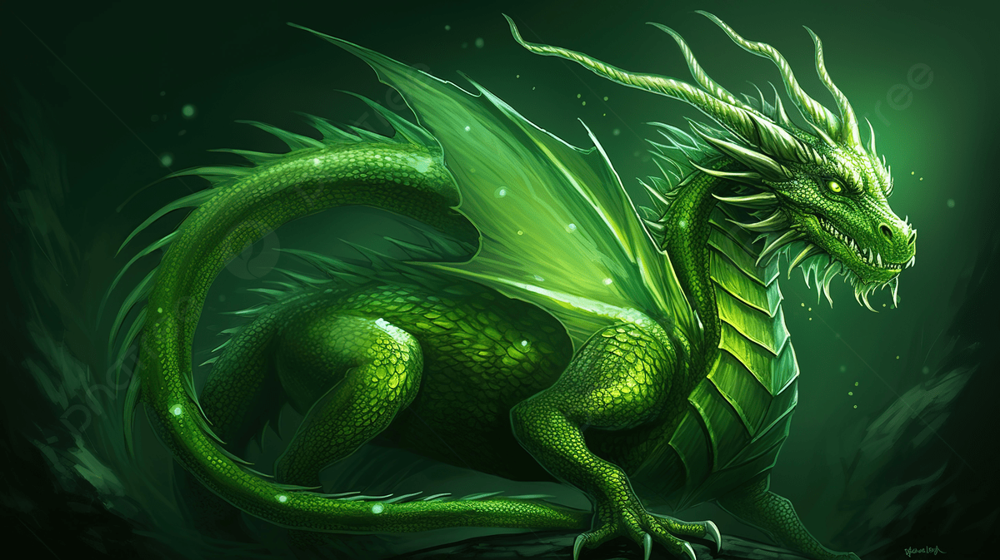

Ana Kampüs
Uçuş dersleri ve büyük salon etkinlikleri.
Sıradan dünyayı geride bırak. Binlerce yıllık sırlar seni bekliyor.
Uçuş dersleri ve büyük salon etkinlikleri.
Kendini korumayı öğren.

Ejderhalara fısıldayanlar aranıyor.
Şişelenmiş şöhret, kaynatılmış ihtişam.